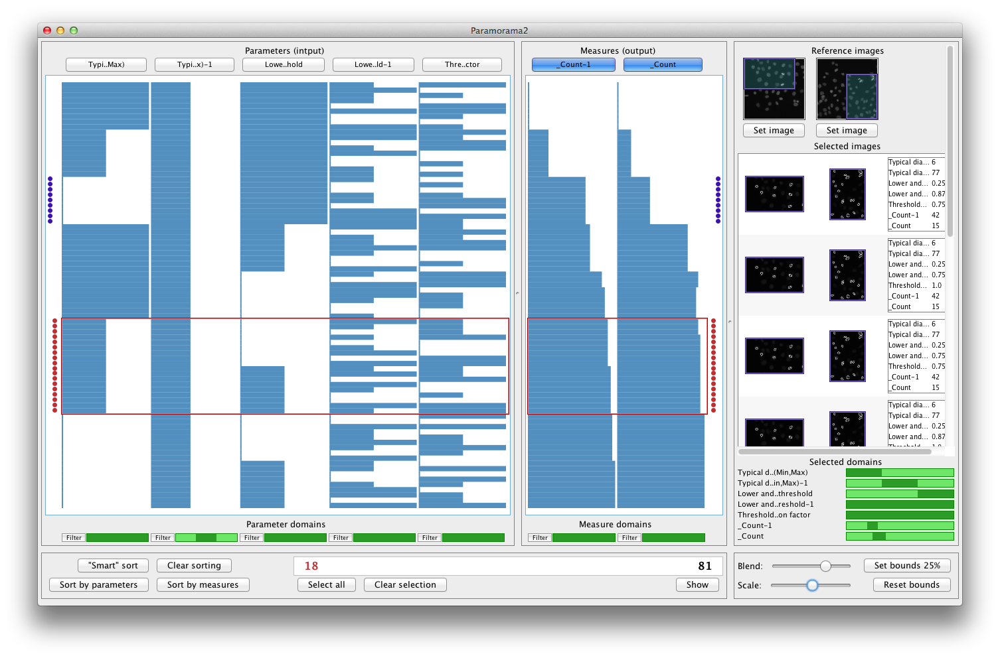

Introduction | Getting started | Sorting | Filtering | Selection | Download | Contact

Thank you for your interest in Paramorama 2, an interactive visualization prototype for exploring the parameter space of image analysis algorithms. This tutorial will guide you through the features that Paramorama 2 offers. To work through it yourself, you will need:
Both are available here.
Alternatively, by simply reading through the these pages you should get a good idea of how Paramorama 2 can help you.
The approach we have taken with Paramorama 2 assumes that the algorithm under study takes a number of real-valued parameter values (and an image to operate on) as input and generates one or more measures and an image as output. For example, a simple hypothetical segmentation algorithm might have two input parameters, smoothing (how much noise reduction to apply) and thresholding (the pixel intensity at which to differentiate foreground and background). When the algorithm executes, it computes the number of objects that have been segmented (the number of contiguous regions detected in the "foreground") and also generates an image containing the outlines of these regions.
Paramorama 2 was developed to visually analyze the relationships between the input parameters and the output measures and images. In particular, it provides visual support to investigate and compare the results of running an image analysis algorithm with several different combinations of input parameter values. For this to work, it is assumed that:
To return to our example, suppose that smoothing and thresholding have been uniformly sampled three times each on the interval [0.0, 0.25]. This yields three values each for a total of nine unique combinations. Each combination of input parameter values will give rise to a particular number of segments being identified (object count) and will produce a corresponding output image. These results can be tabulated as shown below:
Smoothing Thresholding Object count Output image
0.0 0.0 0 segmentation01.jpg
0.0 0.125 0 segmentation02.jpg
0.0 0.25 2 segmentation03.jpg
0.125 0.0 2 segmentation04.jpg
0.125 0.125 2 segmentation05.jpg
0.125 0.25 3 segmentation06.jpg
0.25 0.0 3 segmentation07.jpg
0.25 0.125 3 segmentation08.jpg
0.25 0.25 4 segmentation09.jpg
Paramorama 2 reads tables saved as flat text files in tab-separated values format, saved with a ".tsv" extension. Every column represents either an input parameter, an output measure, or the path to an output image. The first row provides the names of the columns (the column headers). Each subsequent row captures the relationship between a unique combination of input parameters, the corresponding output measures, and the corresponding output image. For example, the tabular results discussed in the previous section will be saved as follows:
Smoothing<tab> Thresholding<tab> _Object count<tab> Output image<linebreak>
0.0<tab> 0.0<tab> 0<tab> segmentation01.jpg<linebreak>
0.0<tab> 0.125<tab> 0<tab> segmentation02.jpg<linebreak>
0.0<tab> 0.25<tab> 2<tab> segmentation03.jpg<linebreak>
0.125<tab> 0.0<tab> 2<tab> segmentation04.jpg<linebreak>
0.125<tab> 0.125<tab> 2<tab> segmentation05.jpg<linebreak>
0.125<tab> 0.25<tab> 3<tab> segmentation06.jpg<linebreak>
0.25<tab> 0.0<tab> 3<tab> segmentation07.jpg<linebreak>
0.25<tab> 0.125<tab> 3<tab> segmentation08.jpg<linebreak>
0.25<tab> 0.25<tab> 4<tab> segmentation09.jpg<linebreak>
For parameters and measures, please note:
For images, please note:
Historic quirks:
It should be reasonably straightforward to customize your own proprietary image analysis software to generate output as described above. Indeed, we have worked with researchers who were able to do this without much trouble.
However, we have also developed a custom plug-in for CellProfiler, a popular image analysis framework developed and maintained by the Imaging Platform at the Broad Institute of MIT and Harvard. After specifying which algorithm to use (CellProfiler has many), which input parameters to sample and how, the plugin automatically computes all unique combinations of the sampled values. It then executes the algorithm in question for each unique combination of parameter values and saves the results to disk in the format described in the previous section. The plugin currently ships with the developer's version of CellProfiler.
(c) Copyright 2012, A.J. Pretorius. All rights reserved.